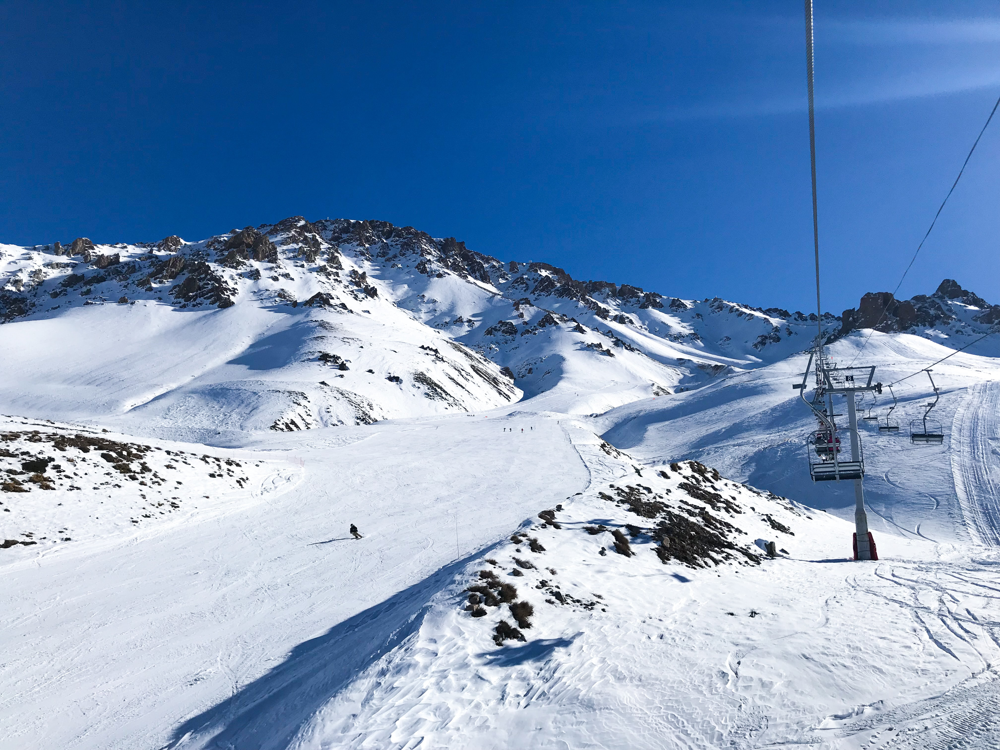
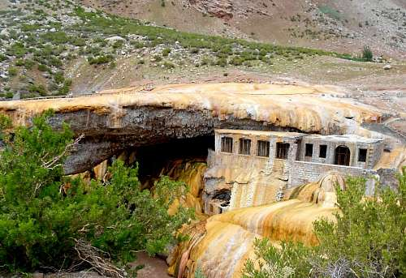
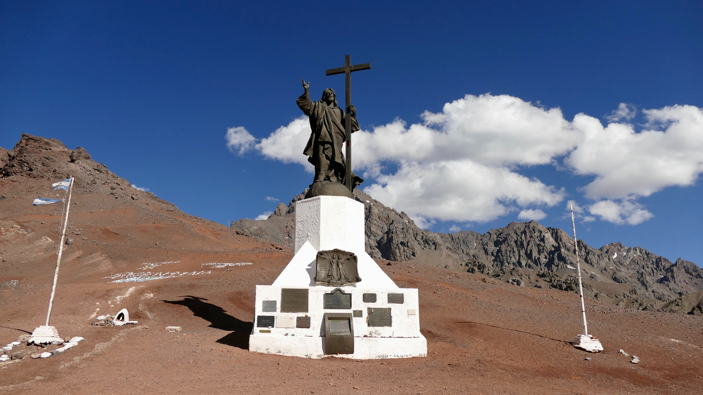

LUGARES DE INTERES

Aconcagua
Con una altura de 6.961 m nos encontramos con esta imponente montaña conocida como el techo de america donde año tras año montañistas de todo el mundo se acercan para intentar conquistarla

Valle Grande
Ubicado en San Rafael en el sur de la provincia este es uno de los tantos espejos de agua del sur de Mendoza
Las Leñas
Ubicado en Malargue. En invierno podemos disfrutar de una de las mejores y mas conocida pistas de sky del pais
Puente del Inca
El monumento natural Puente del Inca es un área natural protegida de la provincia de Mendoza en Argentina, adyacente a la localidad de Puente del Inca. Forma parte del sistema vial Andino Qhapaqñan, declarado Patrimonio de la Humanidad por la UNESCO
Cristo Redentor
Ubicado justo en la línea de la frontera argentina-chilena a 3854 msnm. Conmemora la superación pacífica de un conflicto por cuestiones de límites que había llevado a ambos países a estar al borde de la guerra.